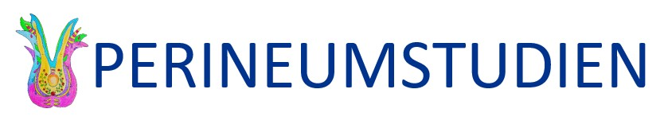

PERINEUMSTUDIEN

Vi søker gravide til
Kvinneklinikken på Akershus universitetssykehus søker gravide til et forskningsprosjekt om overfladiske fødselsrifter.
Etter fødsel opplever mange kvinner forandringer i underlivet, men få kvinner snakker høyt om dette.
Hva er perineum og en perinealrift?
Perineum er det greske ordet for «mellomkjøttet», et område mellom skjedeåpningen og endetarmsåpningen. Perineum består av hud, muskler, nerver og bindevev. Under fødsel kan det oppstå rifter i perineum (perinealrifter). Dette skjer når barnets hode passerer gjennom fødselskanalen og vaginalåpningen. Perinealrifter er vanlig, og opptil 85% av førstegangsfødende vil få en overfladisk perinealrift.
De aller fleste overfladiske perinealrifter vil ikke gi langvarige plager.Likevel, noen kvinner opplever underlivsplager etter å ha fått en overfladisk perinealrift, f.eks. smerter i perineum, smerter ved samleie og/eller «vidhets»- følelse ved samleie. Underlivsplager som disse er fortsatt tabubelagt, og det har vært lite fokus på underlivsplager som følge av perinealrifter i forskningen til nå.
Hva er hensikten med studien?
- Kartlegge perineums anatomi og om det finnes en sammenheng med overfladiske perinealrifter.
- Kartlegge eventuelle komplikasjoner etter overfladiske perinealrifter, f.eks. blødning, sårinfeksjon eller smerter ved samleie.
- Kartlegge perineums anatomi etter fødsel blant annet med hjelp av vaginal ultralyd.
Hvem kan delta?
Du må være gravid for å delta. Vi søker alle førstegangsfødende kvinner eller kvinner som har født vaginalt tidligere.
Hva innebærer studien for deg?
Studien innebærer at du besvarer flere spørreskjemaer i løpet av studieperioden: i det aktuelle svangerskapet, 3 måneder etter fødsel og 1 år etter fødsel. Når du kommer inn for å føde, skal vi måle perineum før og etter fødsel. Dersom det oppstår overfladiske rifter i forbindelse med din fødsel, så følger vi opp dette.
1 år etter fødsel vil du få en gynekologisk undersøkelse, i tillegg til en vaginal ultralyd for å se på perineums anatomi.
ØNSKER DU MER INFORMASJON?

Eller ta kontakt med:
Franziska Siafarikas, gynekolog, Mobil: 96753203
E-post: franziska.siafarikas@medisin.uio.no
Tuva Kristine Halle, lege, Mobil: 45600882
E-post: tkhalle@medisin.uio.no
Marthe Dalevoll Macedo, jordmor, Mobil: 98696822
E-post: marthe.dalevoll.macedo@ahus.no
Jeanett Risløkken, jordmor, Mobil: 91105161
E-post: jrislokken@gmail.com
Det er frivillig a delta i prosjektet og du kan når som helst og uten a oppgi noen grunn trekke deg fra studien.

FORESPØRSEL OM DELTAKELSE I FORSKNINGSPROSJEKTET:
«PERINEUMSTUDIEN»
Kartlegging av korttids- og langtidskomplikasjoner i forbindelse med
overfladiske perinealrifter som oppstår under vaginal fødsel.
Kartlegging av forandringer i perineum 1 år etter en overfladisk perinealrift ved hjelp
av vaginal ultralyd.
Ønsker du å delta i «Perineumstudien»?
Bakgrunn og hensikt
Perineum er det greske ordet for «mellomkjøttet», et område mellom skjedeåpningen og endetarmsåpningen. Under fødsel kan det oppstå fødselsrifter i perineum (perinealrifter). Dette skjer når barnets hode passerer gjennom fødselskanalen og vaginalåpningen. Perinealrifter er vanlig, og opptil 85% av førstegangsfødende vil få en overfladisk perinealrift. De aller fleste overfladiske perinealrifter vil ikke gi langvarige plager. Likevel, noen kvinner opplever underlivsplager etter å ha fått en overfladisk perinealrift, f.eks. smerter i perineum, smerter ved samleie og/eller «vidhets»-følelse ved samleie. Underlivsplager som disse er fortsatt tabubelagt, og det har vært lite fokus på underlivsplager som følge av perinealrifter i forskningen til nå.
Hensikten med studien er:
- Kartlegge perineums anatomi og om det finnes en sammenheng med overfladiske perinealrifter.
- Kartlegge eventuelle komplikasjoner etter overfladiske perinealrifter, f.eks. blødning, sårinfeksjon eller smerter ved samleie.
- Kartlegge perineums anatomi etter fødsel blant annet med hjelp av vaginal ultralyd.
Hvem kan være med?
Alle kvinner som har ett barn i magen kan være med. Om du har født med keisersnitt før eller du har hatt en alvorlig perinealrift (en riftskade som involverer skade på både perineum og endetarmens lukkemuskel) kan du ikke være med.
Hva innebærer studien?
Elektronisk spørreskjema
Det er vanlig å bli undersøkt vaginalt når du kommer inn på fødeavdelingen. Om du kommer inn på fødeavdelingen i en tidlig fase av fødselen skal vi måle perineum utvending med målebånd.
Undersøkelse ved fødsel
Alle kvinner som har ett barn i magen kan være med. Om du har født med keisersnitt før eller du har hatt en alvorlig perinealrift (en riftskade som involverer skade på både perineum og endetarmens lukkemuskel) kan du ikke være med.
Videre undersøkelser ved fødsel / i barsel (kun dersom du føder vaginalt)
Dersom du har fått en overfladisk perinealrift i forbindelse med din fødsel, så skal 2 jordmødre undersøke og måle perinealriften din. Etter at riften er blitt sydd, så skal de måle perineum utvending med målebånd igjen. De måler også perineum etter fødsel om du ikke har fått en perinealrift. 7 dager etter fødselen blir du kontaktet via telefon. Vi vil stille deg noen spørsmål rundt eventuelle plager i perinealområdet.
Ett år etter fødselen
Du vil bli kontaktet og innkalt til en undersøkelse på Kvinneklinikken ved Akershus Universitetssykehus. En lege vil undersøke deg med en gynekologisk undersøkelse og en innvendig vaginal ultralyd. Undersøkelsen tar ikke lengre enn 15 minutter, men det settes av 45 minutter slik at du kan få svar på eventuelle spørsmål som du skulle ha.
Mulige fordeler og ulemper
Som deltager i denne studien vil du få en grundig undersøkelse av perineum og eventuelt din fødselsrift om du skulle få en rift i forbindelse med fødselen. Helsepersonell med spesialkompetanse innen kvinnehelse foretar undersøkelsene og svarer på eventuelle spørsmål. Undersøkelsene som inngår i studien er ikke forbundet med risiko for skade eller bivirkninger hos deg eller ditt barn. Undersøkelsen er ikke smertefull.
Hva skjer med informasjonen om deg
Informasjonen som registreres om deg skal kun brukes slik som beskrevet i hensikten med studien. Behandlere og undersøker har taushetsplikt. Alle opplysningene pseudonymiseres og behandles uten navn, fødselsnummer eller andre direkte gjenkjennende opplysninger. Kun autorisert personell knyttet til prosjektet har adgang til informasjon som gjør det mulig å finne tilbake til deg. Det vil ikke være mulig å identifisere deg når studiens resultater publiseres.
I tillegg til data fra spørreskjemaene og undersøkelsene utført av jordmor og gynekolog vil vi innhente relevant journaldata fra den aktuelle fødselen og eventuelt fra tidligere fødsler (f.eks. lengde på fødselsforløp, eventuell instrumentell fødsel, barnets hodeomkrets og vekt, bedøvelse som epidural eller lystgass, behov for riestimulerende medisin, blødning under fødsel, behov for antibiotika, hvordan riften har blitt sydd). Fra journalen skal vi også innhente informasjon om røyking/snusing i svangerskapet, utdanningen din, og type prevensjon før svangerskapet.
Sier du ja til å delta i studien, har du rett til å få innsyn i hvilke opplysninger som er registrert om deg. Du har rett til å få korrigert eventuelle feil. Når studien er avsluttet vil opplysningene bli oppbevart i en sikker database i 5 år. Opplysningene kan kun hentes ut hvis det blir aktuelt med en ytterligere oppfølgingsstudie, i så fall vil du få en ny henvendelse om samtykke til dette.
Frivillig deltakelse
Det er frivilling å delta i prosjektet. Dersom du ønsker å delta, trenger vi ditt skriftlige samtykke. Etter at du har meldt din interesse, vil du få tilsendt en link til en nettside med informasjon om studien og studiens samtykkeerklæring. Du samtykker med din personlige, elektroniske signatur (e-signatur) som innhentes via ID-porten (MinID, BankID, Buypass ID, Commfides). Du kan når som helst og uten å oppgi noen grunn trekke deg fra studien. Dette vil ikke få konsekvenser for din videre behandling. Dersom du trekker deg fra prosjektet, kan du kreve å få slettet innsamlede prøver og opplysninger, med mindre opplysningene allerede er inngått i analyser eller brukt i vitenskapelige publikasjoner. Dersom du senere ønsker å trekke deg eller har spørsmål til prosjektet, kan du kontakte prosjektleder Prof. Marie Ellström Engh; mobil: 90732375; mail: m.e.engh@medisin.uio.no eller prosjektmedarbeider Franziska Siafarikas, mobil 96753203 mail: franziska.siafarikas@medisin.uio.no.
Ved å delta i prosjektet, samtykker du også til at opplysninger, kan utleveres til andre forskningsgrupper. Informasjon som knytter dine data til personidentifiserende opplysninger vil ikke bli utlevert.
Ansvar og finansiering
Studiene gjennomføres på Akershus universitetssykehus (Ahus). Studiene finansieres av Kvinneklinikken, Ahus, Universitetet i Oslo og med uavhengige forskningsmidler. Studiene er godkjent av Regional komité for medisinsk forskningsetikk, er meldt til Norsk Senter for Forskningsdata og er vurdert av personvernombudet ved Akershus universitetssykehus.
Godkjenning
Regional komité for medisinsk og helsefaglig forskningsetikk har vurdert prosjektet, og har gitt forhåndsgodkjenning Saksnummer hos REK (2020/116952). Etter personopplysningslov har Ahus Kvinneklinikken og prosjektleder Prof. Marie Ellström Engh; mobil: 90732375; mail: m.e.engh@medisin.uio.no et selvstendig ansvar for å sikre at behandlingen av dine opplysninger har et lovlig grunnlag. Det rettslige grunnlaget for behandling av dine personopplysninger i prosjektet er EUs personvernforordning artikkel 6 nr. 1a og artikkel 9 nr. 2a jf. helseforskningsloven § 9. I tillegg innhenter vi samtykke for å sikre medbestemmelse, åpenhet og forutsigbarhet for deg som prosjektdeltaker.
Du har rett til å klage på behandlingen av dine opplysninger til Datatilsynet (Postboks 458 Sentrum; 0105 Oslo) eller til lokalt personvernombud (PVO) på Ahus (personvern@ahus.no; adresse: Postboks 1000; 1478, Lørenskog).
Med vennlig hilsen
Marie Ellström Engh
Dr. med, professor, gynekolog
Ahus Kvinneklinikken
Dr. med, professor, gynekolog
Ahus Kvinneklinikken
Franziska Siafarikas
Dr. med, gynekolog
Ahus Kvinneklinikken
Dr. med, gynekolog
Ahus Kvinneklinikken
Tuva Kristine Toresdatter Halle
Lege, PhD-student
Ahus Kvinneklinikken
Lege, PhD-student
Ahus Kvinneklinikken
Jeanett Risløkken
Jordmor, PhD-student
Ahus Kvinneklinikken
Jordmor, PhD-student
Ahus Kvinneklinikken
Marthe Dalevoll Macedo
Jordmor, PhD-student
Ahus Kvinneklinikken
Jordmor, PhD-student
Ahus Kvinneklinikken